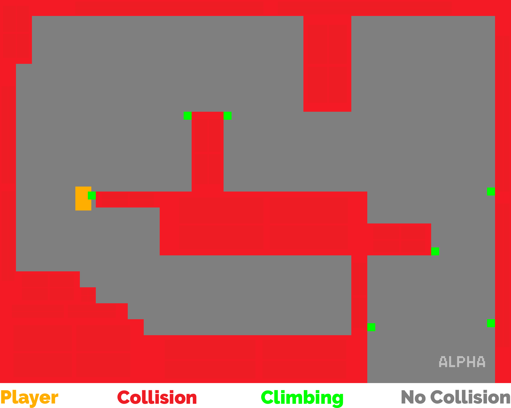
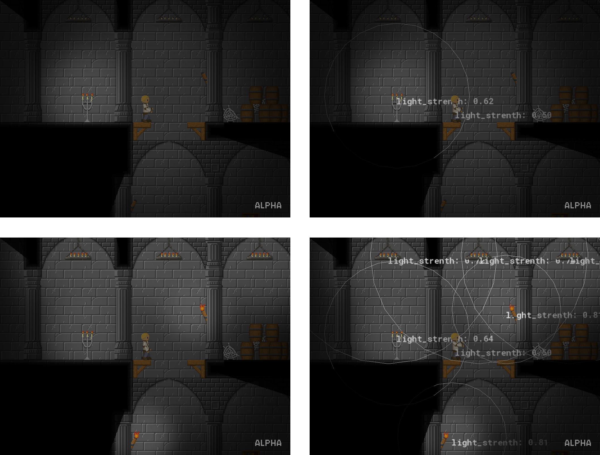
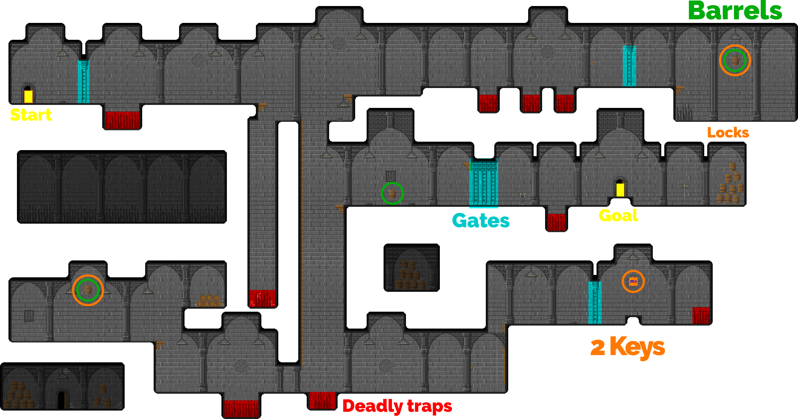
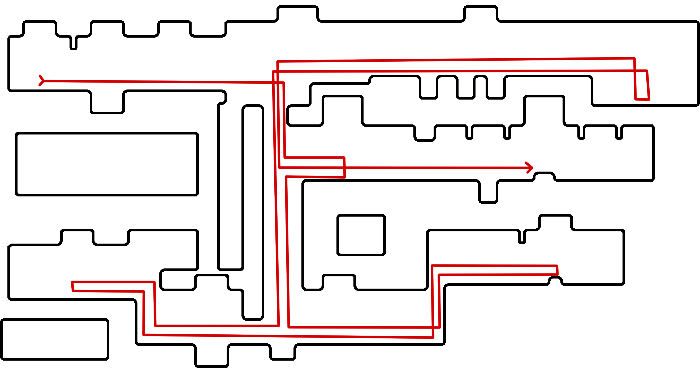

a Game to challenge myself
Before I started this project I mostly created concepts, single assets or levels for games, and had lots of small projects I worked on over a long time. To see If I was also able to produce a whole game, in a limited period of time, I challenged myself with creating a game in 2 weeks, all by myself.
For that the scope had to be very small, but on the other hand it should have enough aspects I could focus on. The aspects I planned to create were: simple 2D movement (including climbing and collision), 2D pixelartstyle, an own shadow/light -system, camera behavior and level design, to only name the biggest.
My first goal was to create a prototype, to test the basic gameplay elements, like running, climbing and collision. I chose Game Maker Studio 2 for it, because it was the environment I used to be most experienced with and knew what I would be able to pull off. The result looked like this:
With all sprites included and no lighting yet, the game looked like the following
Maybe the biggest challenge for me, was the creation of the light/shadow system, because I had never done anything like that before. The shadow system basically calculates which areas are out of your/(the players) sight. With simple vector calculation, all walls draw their ‘shadow’ (the area behind them – from the players perspective) on a separate surface.
This separate surface is multiplied onto the normal game view, later in the rendering of the frame. Something similar goes for the light-system. Every light source gets a radius and an intensity, after that I generate a white blurry dot in matching size and opacity.
The light representation is also drawed on a separate black layer, which is added in the rendering process along with some more blending methods to create the light effect. The finals result looks like this:
After I created all elements including their look and behavior, I was finally able to set them in context, to create the levels. The first levels are teaching the basic mechanics, like jumping and the usage of pressure plates to open gates. We take a look at a more complex one here.
In the center of the level is a bigger hall, with 3 gates and 3 pressure plates, located. The one in the middle is already activated. If the player walks on one of the others or takes the barrel that is already placed, he can directly see the connection between the plates and the gates.
An additional hint is stored in the stone plate on the wall. Stone plates are used in the game to give hints for puzzles or to tell stories through poetry or different kinds of texts, the player is able to read. The player hopefully has the idea to get two additional barrels to place them on the plates in order to open the door.
The barrels have another function as well. You are able to climb onto them, to reach areas which are higher that you can normally jump or climb. In that case you also have to take the barrel with you, to reach the other barrels. The other barrels are, in this case, also locked at their places, so you first need to get the two keys from the bottom floor.
But you are also able to get the keys first, the level can be played in different ways and orders. The most optimal way looks something like this:
The level is enhanced with some decorative elements like spiderwebs and other stone plates for you, to learn more about the castle you are captured in. Some rooms are placed around you, which you can’t reach, just to give the architecture a more natural feeling.
In conclusion, the level design is very simple and was quite fun to come up with. Moreover, playtesting from friends and family really helped to improve the experience of playing the level.